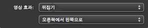

단추에 영상 효과를 추가하려면,

메뉴에서 영상 효과를 추가하려는 단추를 선택하십시오(한 번 클릭).
한 개 이상의 단추를 선택하려면 Shift 키를 누른 채로 단추들을 클릭하십시오. 모든 단추를 선택하려면 먼저 단추 하나를 선택하고 편집 > 모든 단추 선택을 선택하십시오. 선택한 영상 효과가 선택한 모든 단추에 적용됩니다.

Command-I를 눌러 단추 정보 윈도우를 여십시오.

영상 효과 팝업 메뉴에서 영상 효과를 선택하십시오.
두 번째 팝업 메뉴가 “오른쪽에서 왼쪽으로”(아래 참조)로 변경되었다면, 영상 효과가 재생되는 방향을 선택할 수 있습니다. 다른 방향을 선택하려면 팝업 메뉴에서 새로운 선택을 하십시오.


영상 효과가 어떻게 보이는지 확인하려면 미리보기 단추(아래 참조)를 클릭하십시오.
이렇게 하면 iDVD 리모컨이 열립니다. 포인터를 사용하여 리모컨의 화살표 단추를 선택하면서 메뉴에서 영상 효과를 추가한 단추나 단추들을 클릭하십시오. 리모컨에 있는 Exit을 클릭하여 메뉴로 돌아가십시오.